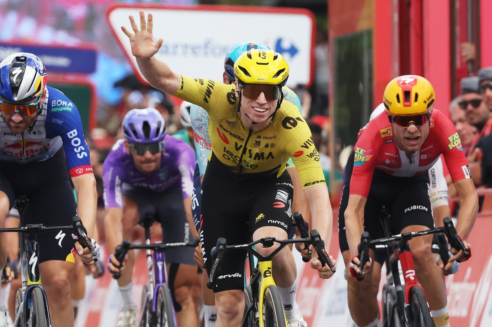

Five fingers. Manita.
9 Sep 2026
Stage 17, Dos Hermanas → Sevilla, 184 km. Brennan 4:07:15 from the bunch over Meeus and Cort.
Thursday 10 Sep 2026
Stage 17, Wed 9 Sep: Dos Hermanas → Sevilla, 184 km flat. Winner Matthew Brennan (Visma) 4:07:15; 2. Jordi Meeus s.t.; 3. Magnus Cort s.t.; 4. Alessandro Romele; 5. Steffen De Schuyteneer. Break: Paleni, Fernández, Dversnes — Paleni solo to 3 km. Incident-free day. No categorized climbs.
GC unchanged: red Mas 60:09:44; Gall +2:06; Roglič +2:10; Carapaz +4:24; Onley +5:44 (white). Green van Aert 295, Brennan 239 (−56). Polka Buitrago 69. Visma’s seventh stage this race. Tomorrow Stage 18 ITT: El Puerto de Santa María → Jerez, 32.1 km; Mas starts last.
Sevilla was supposed to be Visma’s train day. It wasn’t. A late three-up flicker ate their legs, Uno-X rolled six yellow-reds onto the front for Cort, and Brennan still came around the Dane and held Meeus — five fingers up on the line. Youngest rider ever to five Grand Tour stage wins; first man to five in one GT since Kittel’s 2017 Tour. Team record: seven in a single Grand Tour, past their own six from the ’22 Tour and ’26 Giro.
GC slept again so the board can scream this afternoon. Mas banks 2:10 on Roglič into a flat 32 km chrono with Levante wind risk; Gall is the meat in the sandwich at +2:06. Van Aert already talking an eighth for the black-and-yellow on the watch. Sprinters eye Granada’s finale; the mountains between here and there will decide who is still standing to try.
9 Sep 2026
Stage 17, Dos Hermanas → Sevilla, 184 km. Brennan 4:07:15 from the bunch over Meeus and Cort.

9 Sep 2026
First debutant with five GT stages in one race since the record books needed rewriting. Visma’s seventh this Vuelta.

9 Sep 2026
Team Grand Tour record. Van Aert midwifed again; Jerez chrono is next on the wishlist.